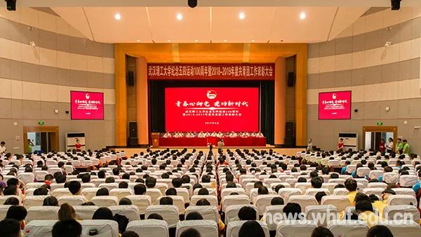
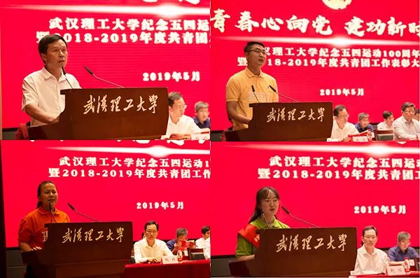
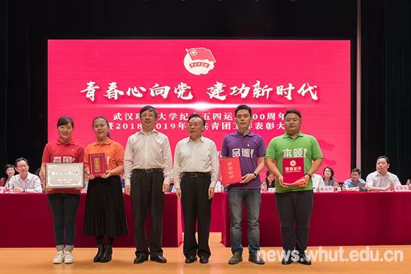
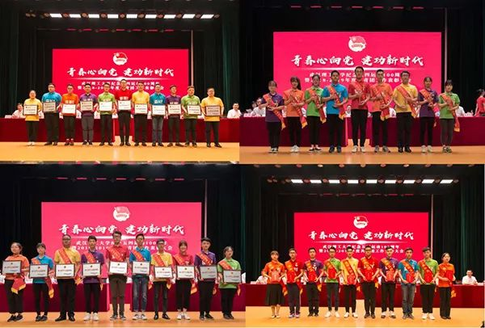
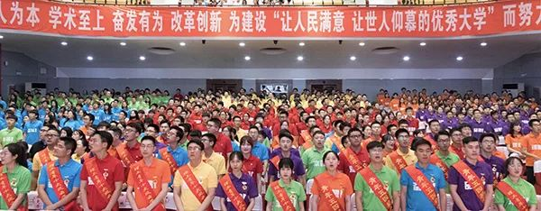

武汉理工大学纪念五四运动100周年举行
| 发布：2019-5-17 | 来源：团委 | 浏览：484 |
青春心向党，建功新时代。5月23日下午，我校纪念五四运动100周年暨2018-2019年度共青团工作表彰大会在西院大礼堂举行。校领导信思金、张清杰、王乾坤、康灿华、赵经、孟芳兵、申祖武，校长助理吴超仲出席，学校相关职能部门负责人，各学院（部）学生工作负责人、团委书记，获得学校共青团工作表彰的先进集体、优秀个人及各学院团员青年代表参加。
在庄严的国歌声中，大会序幕缓缓拉开。与会人员一起学习观看了纪念五四运动100周年大会习近平总书记重要讲话精神和《百年五四 青春传承——武汉理工大学纪念五四运动100周年》视频。
校党委书记信思金代表学校党委向受表彰的集体和个人表示热烈祝贺。他在讲话中指出全校上下要认真学习、深刻领会习近平总书记在纪念五四运动100周年大会上的讲话精神，传承弘扬伟大五四精神。他希望全校青年要立志，用远大志向引领人生航向；要立德，用高尚品德拓展人生价值；要立学，用过硬本领创造精彩人生。他对学校共青团在引领凝聚青年师生、组织动员青年师生、联系服务青年师生，推动学校教育事业高质量发展过程中作出的积极贡献和取得的成绩予以充分肯定。并对共青团组织提出了要坚持“党的助手和后备军”定位，践行新思想，以理想信念引领青年；坚持“党领导的先进青年的群团组织”定位，展现新作为，以奋斗实干培育青年；坚持“党联系青年的桥梁和纽带”定位，满足新需求，以服务成长凝聚青年；坚持“党的青年群众工作的重要力量”定位，树立新作风，以改革创新激励青年等四个要求。信书记强调，全校上下要高度重视青年工作，为青年发展提供有力支持，做青年朋友的知心人、青年工作的热心人和青年师生的引路人，努力把青年一代培养造就成德智体美劳全面发展的社会主义建设者和接班人。
会上，交通学院党委书记孙孝文、材料科学与工程学院团委书记张巍、“全省活力团支部”生物1701团支部书记董莉娟、“中国大学生年度人物”黄莺依次发言。分享了学院党委围绕立德树人根本任务，领导学院团委培养青年学生爱国主义情怀的工作经验；学院团委引领凝聚、组织动员、联系服务青年的亮点举措；团支部规范建设、活力提升的具体做法；以“心光”为世界明灯，用不屈为人生铺路的成长感悟。
校党委书记信思金、校长张清杰院士为全国五四红旗团委、全国大学生社会实践先进单位、中国大学生年度人物、湖北青年五四奖章颁奖。
与会领导为共青团工作先进集体和优秀个人代表颁奖。“理工青年十大风云学子”“理工青年十大精英团队”“优秀基层团委”“校青年五四奖章”“校五四红旗团支部”代表先后上台领奖。
| 通讯员 | 吕祖恒 | 审稿人 | 吕祖恒 | 责任编辑 | 网宣 |